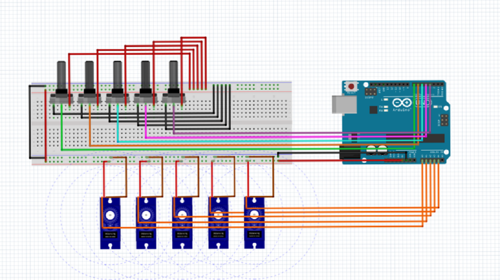

Why build an animatronic hand project? Animatronics is the technology where machines/robots imitate human and animal activities like walking, moving arms, facial expressions etc. You can build machines and control them by moving your hands, fingers and facial muscles. In this course, you will build an animatronic hand that copies the motion of your own hand. Have fun building your very own animatronic hand!
In this course, you will learn to design, fabricate and control an animatronic hand using embedded systems. The animatronic hand that you build can be controlled with your hand movements with the help of flex sensors.
By building this project you will learn about:
1. Arduino architecture and its programming
2. Working of the servo motors - which acts as actuators
3. Design, fabrication of flex sensors
• Arduino Uno Board
• UART Cable
• Servo Motors - 3 Nos.
• Coroplast
• Resistors - 3 Nos.
• Flex Sensors
• Cotton Glove
• IC 7805
• Bread Board & Conductive Foam
• Wire Stripper & Screw Drivers
• Male Pin Connectors
• Eight Core Cable
• Coro Cutter
• Other miscellaneous items
